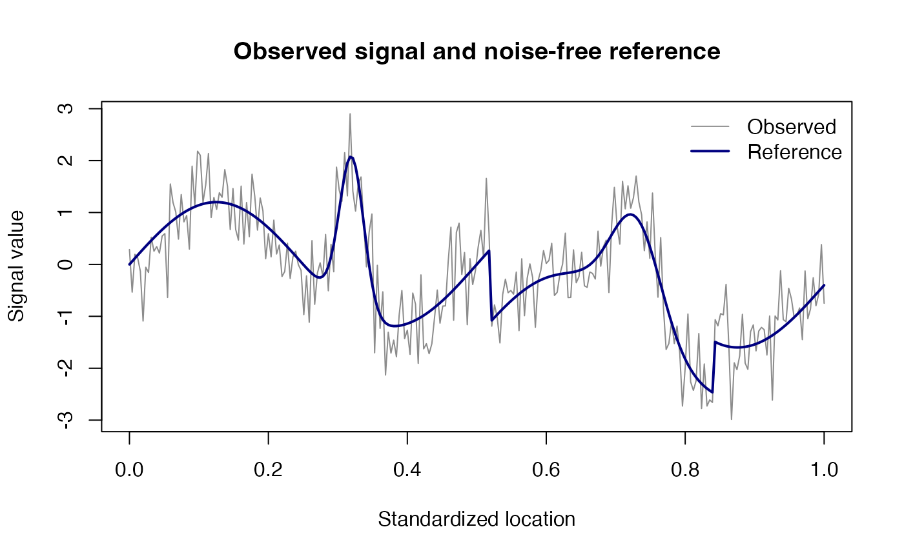
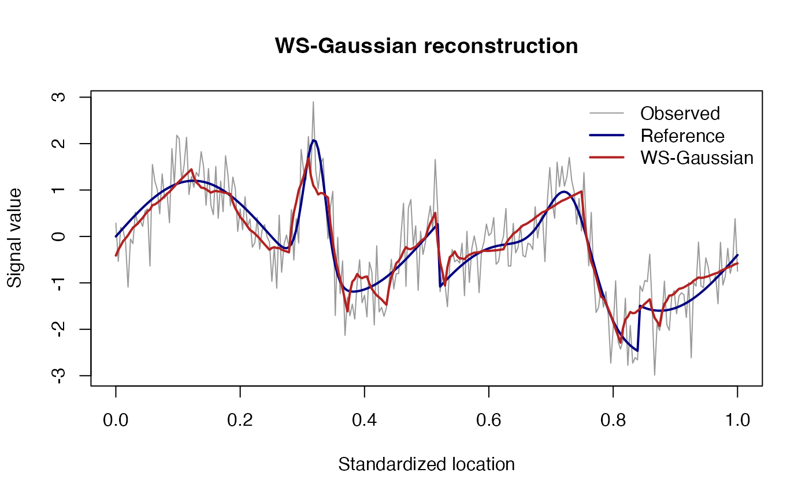
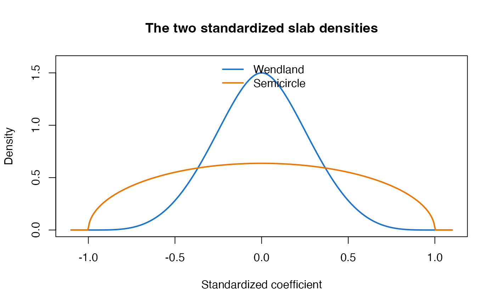
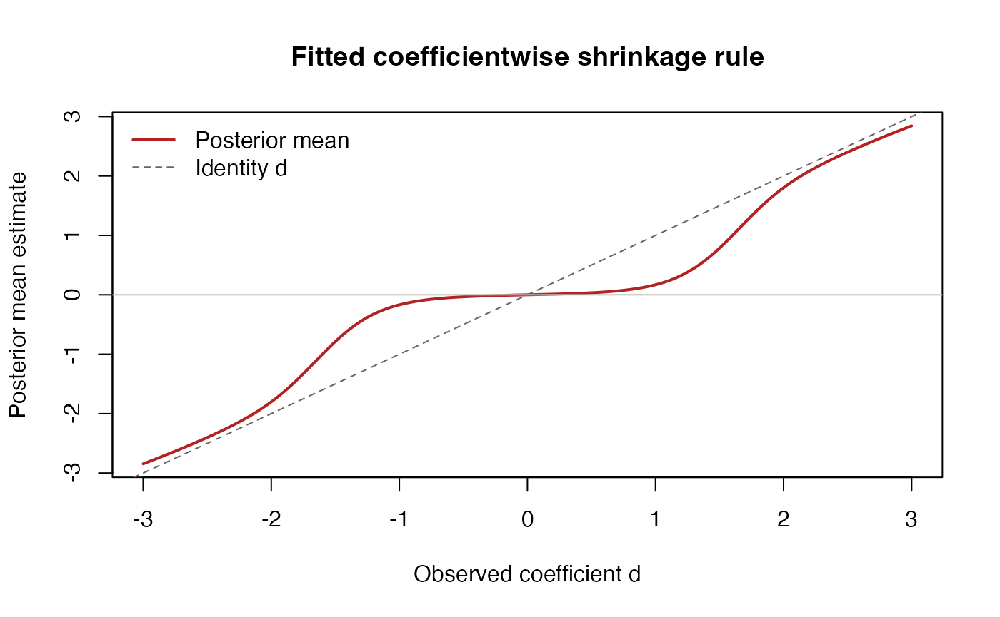
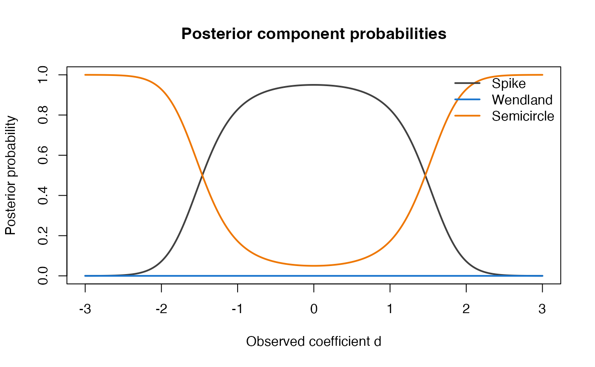

vignettes/WSwavelet_vignette.Rmd
WSwavelet_vignette.RmdWavelet denoising is useful when a signal contains sharp peaks, abrupt transitions, localized features, or rapid oscillations. An orthogonal discrete wavelet transform represents such a signal using a small set of coarse scaling coefficients and detail coefficients at multiple resolutions. The observed detail coefficients are noisy and are often sparse: most are close to zero while a smaller number carry important signal features.
WSwavelet implements a Bayesian shrinkage rule for this setting. Its prior has an explicit point mass at zero and a bounded continuous slab formed by a mixture of two normalized densities:
The relative contribution of the two slab components can vary with resolution through a low-dimensional empirical-Bayes trend. The package provides Gaussian and Laplace coefficientwise likelihoods. The Gaussian version is the primary practical specification; the Laplace version is an alternative working-likelihood analysis for sensitivity to non-Gaussian observation errors.
For an input signal y, the main function follows this sequence:
The scaling coefficients are retained without shrinkage. The package requires a finite input vector of dyadic length, such as 128, 256, or 1024.
Install the wavelet dependency and then install the WSwavelet source archive:
install.packages("wavethresh")
install.packages("WSwavelet_0.1.0.tar.gz", repos = NULL, type = "source")Load the package:
The package does not impose a particular signal-generating model. The following example combines a smooth oscillation with a narrow peak and two localized transitions, giving the denoiser several types of structure to recover.
set.seed(2026)
n <- 256L
x <- seq(0, 1, length.out = n)
demo_signal <- function(x) {
1.2 * sin(4 * pi * x) +
3.0 * exp(-((x - 0.32) / 0.025)^2) +
2.0 * exp(-((x - 0.73) / 0.05)^2) -
1.4 * (x > 0.52) +
1.0 * (x > 0.84)
}
truth <- demo_signal(x)
y <- truth + rnorm(n, sd = 0.55)
plot(
x, y, type = "l", col = "grey55",
xlab = "Standardized location", ylab = "Signal value",
main = "Observed signal and noise-free reference"
)
lines(x, truth, col = "navy", lwd = 2)
legend(
"topright",
legend = c("Observed", "Reference"),
col = c("grey55", "navy"), lty = 1, lwd = c(1, 2),
bty = "n"
)
The main function is wswavelet(). For a quick vignette
run, the example uses a short wavelet filter and 24 quadrature nodes.
For production analyses, the default filter and quadrature settings can
be used or increased after checking computational cost.
fit_g <- wswavelet(
y = y,
likelihood = "gaussian",
filter.number = 2L,
family = "DaubExPhase",
bc = "periodic",
quadrature_n = 24L
)
plot(
x, y, type = "l", col = "grey60",
xlab = "Standardized location", ylab = "Signal value",
main = "WS-Gaussian reconstruction"
)
lines(x, truth, col = "navy", lwd = 2)
lines(x, fit_g$estimate, col = "firebrick", lwd = 2)
legend(
"topright",
legend = c("Observed", "Reference", "WS-Gaussian"),
col = c("grey60", "navy", "firebrick"),
lty = 1, lwd = c(1, 2, 2), bty = "n"
)
The fitted signal is stored in fit_g$estimate. Important fitted quantities are:
fit_g$sigma_hat
#> [1] 0.5958579
fit_g$eta_hat
#> [1] -12 -12
fit_g$optimization$convergence
#> [1] 0The level summary gives the resolution-specific hyperparameters and average posterior component probabilities:
head(
fit_g$level_summary[, c(
"level", "coefficients", "spike_probability", "beta", "omega",
"mean_p0", "mean_pW", "mean_pS"
)]
)
#> level coefficients spike_probability beta omega mean_p0
#> 0 0 1 0.8105354 4.180959 6.144175e-06 1.815194e-09
#> 1 1 2 0.9284007 8.109933 1.106524e-06 8.746042e-08
#> 2 2 4 0.9641032 6.232857 1.992767e-07 2.587512e-01
#> 3 3 8 0.9789878 4.363048 3.588820e-08 4.975558e-01
#> 4 4 16 0.9864345 3.537500 6.463190e-09 8.689578e-01
#> 5 5 32 0.9906295 2.427249 1.163971e-09 9.582905e-01
#> mean_pW mean_pS
#> 0 1.607347e-07 0.99999984
#> 1 3.597331e-07 0.99999955
#> 2 4.669356e-08 0.74124880
#> 3 4.550149e-09 0.50244424
#> 4 1.672502e-10 0.13104221
#> 5 1.663571e-11 0.04170949The fitted detail-level objects contain the observed coefficients, posterior means, posterior component probabilities, component-specific means, support scales, and numerical fallback counts:
names(fit_g$detail[[1L]])
#> [1] "level" "observed" "estimate"
#> [4] "posterior_probability" "component_mean" "component_log_m0"
#> [7] "beta" "spike_probability" "omega"
#> [10] "quadrature_fallbacks"Let denote an observed detail coefficient at level j, and let denote its unknown signal coefficient. The coefficientwise working model is
For the Gaussian version,
The implementation uses the Laplace likelihood as an alternative working specification:
When laplace_rate = NULL, the main fitting function sets once and keeps it fixed during empirical-Bayes optimization.
The standardized Wendland-type density is
and the standardized semicircle density is
For a positive support scale beta, the corresponding coefficient-scale densities are
Both slab densities are symmetric and supported on . The Wendland component is more concentrated near zero, whereas the semicircle component is more dispersed.
The densities can be evaluated directly:
u <- seq(-1.1, 1.1, length.out = 501L)
plot(
u, wendland_kernel(u), type = "l", lwd = 2, col = "dodgerblue3",
ylim = c(0, 1.6), xlab = "Standardized coefficient",
ylab = "Density", main = "The two standardized slab densities"
)
lines(u, semicircle_kernel(u), lwd = 2, col = "darkorange2")
legend(
"top", legend = c("Wendland", "Semicircle"),
col = c("dodgerblue3", "darkorange2"), lty = 1, lwd = 2,
bty = "n"
)
At level j, the prior is
The three prior component probabilities are therefore
The spike probability increases with resolution according to
where ell is spike_offset and gamma is spike_gamma. This expresses the working assumption that finer-scale coefficients are more likely to be noise.
For the adaptive model, define
The two empirical-Bayes parameters eta_0 and eta_1 control the baseline Wendland contribution and its change across resolution. Setting omega_model = “constant” estimates only a common weight. Supplying fixed_omega = 0 or fixed_omega = 1 evaluates the semicircle-only or Wendland-only endpoint, respectively.
The function level_posterior() applies the posterior
calculation to a vector of coefficients at one level. For c in
,
define the component moments
The marginal density of d under the full prior is
The posterior component probabilities are
Conditional on the two continuous components,
Under squared-error loss, the posterior-mean shrinkage estimate is
The spike contributes zero to the posterior mean. Thus, a positive spike probability does not by itself force an exact zero estimate; it expresses posterior evidence for the point-mass component, while the posterior mean is generally a continuous shrinkage rule.
evaluate_shrinkage_curve() evaluates the fitted rule
over hypothetical coefficient values. level_index is the position of the
level in fit$detail, not necessarily the numerical wavelet-level
label.
curve_g <- evaluate_shrinkage_curve(
fit_g,
level_index = 1L,
d_grid = seq(-3, 3, length.out = 301L)
)
plot(
curve_g$d, curve_g$estimate, type = "l", lwd = 2,
col = "firebrick", xlab = "Observed coefficient d",
ylab = "Posterior mean estimate",
main = "Fitted coefficientwise shrinkage rule"
)
abline(0, 1, lty = 2, col = "grey40")
abline(h = 0, col = "grey75")
legend(
"topleft",
legend = c("Posterior mean", "Identity d"),
col = c("firebrick", "grey40"), lty = c(1, 2), lwd = c(2, 1),
bty = "n"
)
The posterior component probabilities can be inspected on the same grid:
matplot(
curve_g$d,
curve_g[, c("posterior_spike", "posterior_wendland",
"posterior_semicircle")],
type = "l", lty = 1, lwd = 2,
col = c("grey25", "dodgerblue3", "darkorange2"),
xlab = "Observed coefficient d", ylab = "Posterior probability",
main = "Posterior component probabilities"
)
legend(
"topright",
legend = c("Spike", "Wendland", "Semicircle"),
col = c("grey25", "dodgerblue3", "darkorange2"),
lty = 1, lwd = 2, bty = "n"
)
level_posterior() independently
The low-level posterior function is useful when a user already has wavelet coefficients and wants posterior quantities without fitting a complete signal. For example, the following uses the first fitted level’s parameters:
level_fit <- fit_g$detail[[1L]]
post <- level_posterior(
d = c(-1, 0, 1),
pi_j = level_fit$spike_probability,
omega_j = level_fit$omega,
beta_j = level_fit$beta,
sigma = fit_g$sigma_hat,
likelihood = fit_g$likelihood,
laplace_rate = fit_g$laplace_rate_hat,
quadrature_n = fit_g$settings$quadrature_n,
use_exact_wendland = fit_g$settings$use_exact_wendland
)
post$posterior_mean
#> [1] -1.686853e-01 6.040471e-18 1.686853e-01
post$probability
#> spike wendland semicircle
#> [1,] 0.8274089 1.665236e-06 0.17258945
#> [2,] 0.9500170 6.374974e-07 0.04998237
#> [3,] 0.8274089 1.665236e-06 0.17258945The Laplace version is fitted by setting likelihood = “laplace”:
fit_l <- wswavelet(
y,
likelihood = "laplace",
filter.number = 2L,
family = "DaubExPhase",
bc = "periodic",
quadrature_n = 24L
)The default rate is computed once from the robust noise estimate and held fixed. For Laplace fits, the Wendland component has a finite-sum expression with a numerical fallback; the semicircle component is evaluated by Gauss-Legendre quadrature after a change of variables that handles the square-root endpoint behavior. Set use_exact_wendland = FALSE to use quadrature for the Wendland component as well.
The Laplace option should be interpreted as an alternative working likelihood, not as a guarantee of uniformly improved performance. Its usefulness depends on the actual error distribution and on the signal and SNR regime.
The default adaptive model estimates both the intercept and resolution trend in the logistic Wendland weight. For component or sensitivity analyses, the following alternatives are available:
# One common empirical-Bayes mixture weight:
fit_constant <- wswavelet(
y, likelihood = "gaussian", omega_model = "constant"
)
# Wendland-only endpoint:
fit_wendland <- wswavelet(
y, likelihood = "gaussian", fixed_omega = 1
)
# Semicircle-only endpoint:
fit_semicircle <- wswavelet(
y, likelihood = "gaussian", fixed_omega = 0
)These endpoint fits are useful for understanding how the two slab shapes contribute to the complete model. They are not separate thresholding methods.
estimate_noise_sd() can be used independently when a
wavelet object has already been constructed:
wavelet_object <- wavethresh::wd(
y,
filter.number = 2L,
family = "DaubExPhase",
type = "wavelet",
bc = "periodic",
verbose = FALSE
)
detail_levels <- 0:(wavethresh::nlevelsWT(wavelet_object) - 1L)
estimate_noise_sd(
wavelet_object,
detail_levels = detail_levels,
mad_levels = 1L
)
#> [1] 0.5958579Unless a known supplied_sd is provided, the estimator is
computed from the finest selected detail levels. If the result is not positive and finite, the implementation pools up to three of the finest available levels and then applies a strictly positive machine-scale fallback if needed.
ws_numerical_checks() evaluates a fixed grid for
Gaussian and Laplace likelihoods and for endpoint and interior values of
the spike probability and Wendland weight:
checks <- ws_numerical_checks(quadrature_n = 32L)
head(
checks[, c(
"likelihood", "pi", "omega", "max_oddness_error",
"min_first_difference", "max_support_excess", "all_finite"
)]
)
#> likelihood pi omega max_oddness_error min_first_difference
#> 1 gaussian 0.0 0 6.661338e-15 9.141978e-04
#> 2 laplace 0.0 0 2.664535e-15 -8.881784e-16
#> 3 gaussian 0.5 0 6.661338e-15 9.142390e-04
#> 4 laplace 0.5 0 1.554312e-15 -1.554312e-15
#> 5 gaussian 1.0 0 0.000000e+00 0.000000e+00
#> 6 laplace 1.0 0 0.000000e+00 0.000000e+00
#> max_support_excess all_finite
#> 1 0 TRUE
#> 2 0 TRUE
#> 3 0 TRUE
#> 4 0 TRUE
#> 5 0 TRUE
#> 6 0 TRUEThe checks include:
The routine is a diagnostic rather than a formal proof. Its numerical errors should be interpreted relative to the quadrature order and floating-point precision.
Use the Gaussian version as the primary default when the observation errors are reasonably close to Gaussian or when computational efficiency is a priority. The Laplace option is useful as a robustness-oriented sensitivity analysis when heavier-tailed or more sharply peaked errors are plausible.
The default quadrature_n = 48L is intended to provide a stable general-purpose calculation. Lower values can make exploratory analyses faster; higher values may be appropriate for numerical validation or difficult parameter regimes. The returned diagnostics record the number of exact Wendland calculations that required numerical fallback.
The current implementation requires a finite signal vector of dyadic length. It uses the boundary convention accepted by wavethresh, with bc = “periodic” by default. If the original record is not dyadic, users should document their padding or extension rule before calling the package and truncate any reconstructed padded values before application-level interpretation.
The fitted beta_j is a data-adaptive truncation scale. It is not a formal estimator of an unknown physical support and does not guarantee that future coefficients remain inside the fitted interval. The quantile rule reduces sensitivity to isolated outliers compared with a maximum-based rule.
The fitting procedure itself is deterministic for fixed inputs and settings. For reproducible simulations, set the seed when generating the noisy signal, record the package version, save the complete fitted object, and report the wavelet family, boundary convention, quadrature order, noise-scale rule, and likelihood.
Please cite the methodological paper when using WSwavelet:
Sanyal, N. (2026). Resolution-Adaptive Compact-Support Priors for Bayesian Wavelet Denoising: A Wendland-Semicircle Slab Mixture for Low-SNR Signal Recovery. Axioms, 15(9), 678. https://doi.org/10.3390/axioms15090678.